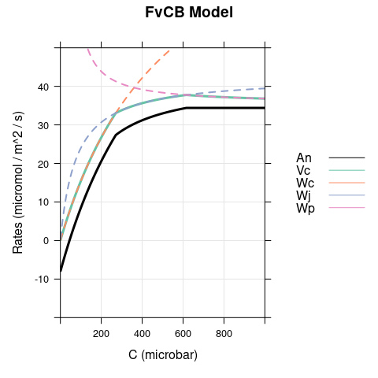
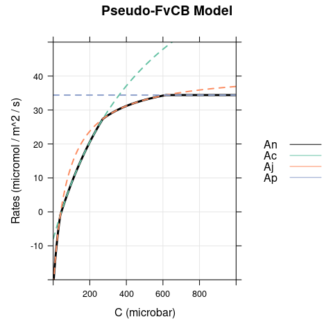
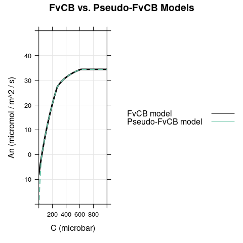
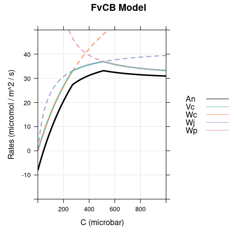
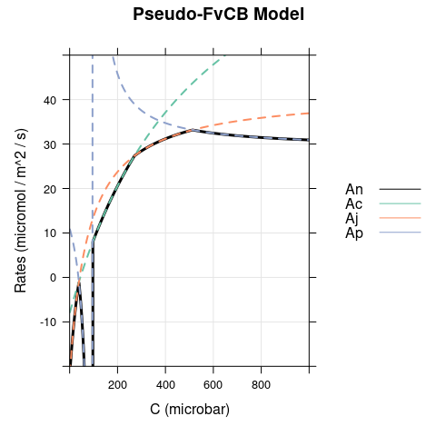
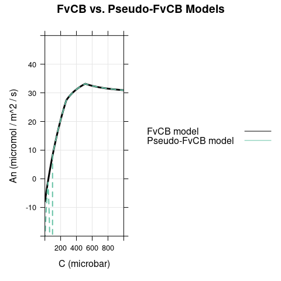
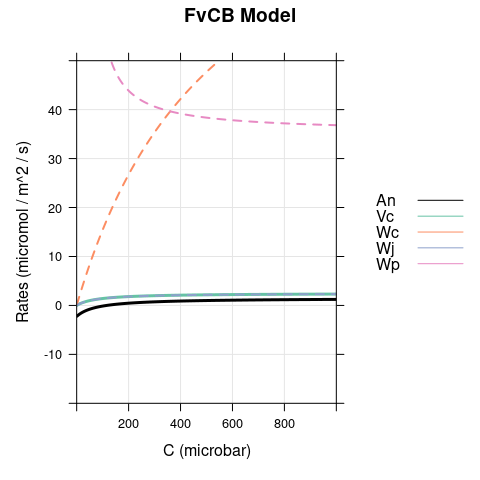
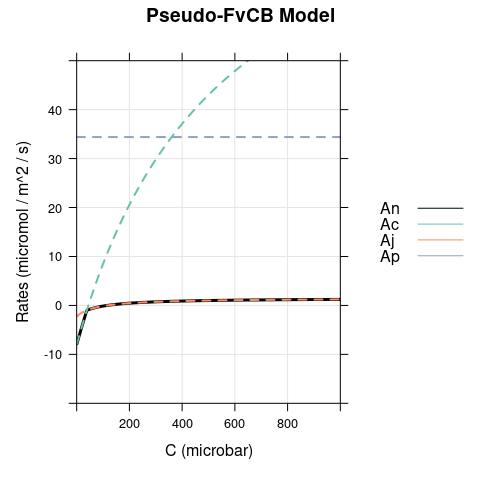
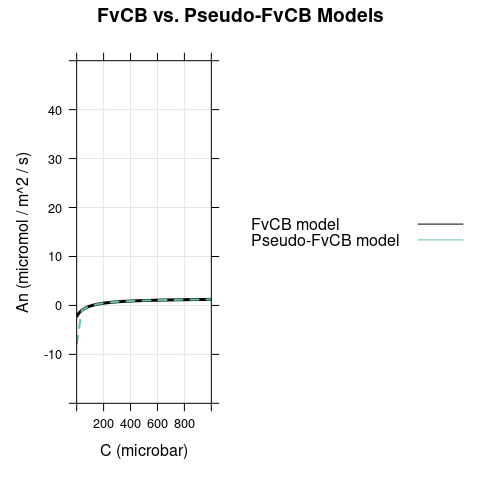

Avoiding Pitfalls When Using the FvCB Model
Source:vignettes/avoiding_pitfalls_fvcb.Rmd
avoiding_pitfalls_fvcb.Rmd1 Overview
The Farquhar-von-Caemmerer-Berry (FvCB) model for C3 photosynthesis was first presented in Farquhar et al. (1980), and since that initial publication, it has become one of the most important models for understanding the photosynthetic response of plants to key environmental variables such as incident light, CO2, and temperature. Many researchers are familiar with the model in the contex of fitting it to experimentally measured CO2 response curves, where certain simplifying assumptions can be reasonably applied to the model. However, these assumptions are not reasonable when using the model in a wider range of conditions than those usually encountered during gas exchange measurements. The goal of this document is to identify several possible pitfalls associated with these assumptions and explain how to avoid them when using the FvCB model.
2 The Central FvCB Equation
The FvCB model is rooted in a biochemical understanding of the photosynthetic process, especially the carboxylation (or oxygenation) of RuBP by the enzyme Rubisco. At its core, it predicts the net CO2 assimilation rate (\(A_n\)) from the values of several key variables. An initial equation for \(A_n\) can be developed from the following considerations:
One carboxylation of RuBP assimilates one molecule of CO2.
Two oxygenations of RuBP produces hazardous byproducts that require the release of one molecule of CO2 to neutralize. (Oxygenation of RuBP is often referred to as photorespiration.)
Mitochondrial respiration also releases CO2 molecules.
Putting this all together, we can write down an initial equation for the net assimilation rate: \[\begin{equation} A_n = V_c - 0.5 \cdot V_o - R_d, \tag{2.1} \end{equation}\] where \(V_c\) is the RuBP carboxylation rate, \(V_o\) is the RuBP oxygenation rate, and \(R_d\) is the mitochondrial respiration rate. As written, \(V_c\), \(V_o\), and \(R_d\) are all non-negative rates, typically with units of \(\mu\)mol m\(^{-2}\) s\(^{-1}\). The first two terms in the equation (\(V_c - 0.5 \cdot V_o\)) represent the contribution of photosynthesis (or Rubisco) to the net CO2 assimilation, while the remaining term (\(-R_d\)) is the result of mitochondrial respiration, a separate process.
In its current form, this equation is not very easy to interpret or use. There are a few modifications we can use to improve it. One change is to introduce \(\phi\), the ratio of RuBP oxygenation to carboxylation: \(\phi = V_o / V_c\). Now we can rewrite Equation (2.1) as follows: \[\begin{equation} A_n = V_c \cdot \left( 1 - 0.5 \cdot \phi \right) - R_d. \tag{2.2} \end{equation}\]
This version of the equation makes it clear that \(\phi\) plays a key role in determining whether RuBP carboxylation is able to outweigh oxygenation; in other words, it determines whether the photosynthetic contribution to the net CO2 assimilation rate is positive or negative. If \(1 - 0.5 \cdot \phi < 0\), then oxygenation consumes more carbon than carboxylation produces; if \(1 - 0.5 \cdot \phi > 0\), then the opposite is true. The crossover point where carboxylation and oxygenation exactly cancel each other out occurs when \(1 - 0.5 \cdot \phi = 0\). It can be shown that \(\phi\) depends on the relative specificity of Rubisco for CO2 versus O2 (\(S_{c/o}\)), the partial pressure of CO2 in the vicinity of Rubisco (\(C\)), and the partial pressure of O2 in the vicinity of Rubisco (\(O\)): \[\begin{equation} \phi = \frac{1}{S_{c/o}} \cdot \frac{O}{C}. \tag{2.3} \end{equation}\] (See, for example, Equation 2.16 from von Caemmerer (2000) and the surrounding discussion.)
Equation (2.3) tells us that when the amount of CO2 near Rubisco increases, or when Rubisco’s specificity for CO2 increases, \(\phi\) decreases and hence the oxygenation rate also decreases. This makes sense at an intuitive level. It also helps to clarify the criteria for photosynthesis to become a net producer of assimilated carbon. One immediate conclusion is that because Rubisco specificity and oxygen levels are generally constant for a particular chloroplast, the only reasonable way to change \(\phi\) is to change \(C\). But we can still learn more. We have already seen that the crossover occurs when \(1 - 0.5 \cdot \phi = 0\) or, equivalently, when \(\phi = 2\). Now, we can rewrite this condition using (2.3): \[\begin{equation} \phi = 2 \\ \rightarrow \frac{1}{S_{c/o}} \cdot \frac{O}{C} = 2 \\ \rightarrow C = \frac{O}{2 \cdot S_{c/o}}. \end{equation}\]
In other words, photosynthesis is a net producer of carbon whenever \(C\) exceeds a special value called \(\Gamma^*\) defined by: \[\begin{equation} \Gamma^* = \frac{O}{2 \cdot S_{c/o}}. \tag{2.4} \end{equation}\] \(\Gamma^*\) is often referred to as the “CO2 compensation point in the absence of mitochondrial respiration.” (In general, the term “CO2 compensation point” refers to the value of \(C\) where \(A_n = 0\).) Note that since atmospheric oxygen levels are fairly constant, \(O\) rarely changes under most conditions, so \(\Gamma^*\) is largely a property of Rubisco; more specifically, it depends primarily on \(S_{c/o}\). (The major exception to this is when \(O\) is artificially decreased during gas exchange measurements in order to reduce \(V_o\).)
With this new concept, we can use Equations (2.3) and (2.4) to rewrite Equation (2.2) as follows: \[\begin{equation} A_n = V_c \cdot (1 - \Gamma^* / C) - R_d \tag{2.5} \end{equation}\] This equation contains a great deal of useful information, and we will refer to it as the central equation of the FvCB model. (This is our terminology, and not a standard name for the equation.) It can be found in many notable descriptions of the FvCB model, such as:
Equation 16.57 in Farquhar and von Caemmerer (1982).
Equation 1 in Kirschbaum and Farquhar (1984).
Equation 2.19 in von Caemmerer (2000).
Equation A6 in von Caemmerer (2013).
(A big exception is the original FvCB paper (Farquhar et al. 1980), which does not contain this equation!)
A key piece of information that can be learned from this equation is that while the RuBP carboxylation rate \(V_c\) can never be negative, the contribution of photosynthesis to the net assimilation rate (\(V_c \cdot(1 - \Gamma^* / C)\)) can be negative; this will occur whenever \(V_c > 0\) and \(C < \Gamma^*\).
The rest of the FvCB model consists of a method for calculating \(V_c\); this will be discussed in the following sections.
3 Choosing a Carboxylation Rate
In the original FvCB model, two scenarios are considered when determining the RuBP carboxylation rate \(V_c\):
When there is plenty of RuBP available for Rubisco to act upon, the carboxylation rate is said to be RuBP-saturated (or Rubisco-limited). In this case, it is common to denote the carboxylation rate by \(W_c\). The equation for \(W_c\) and its derivation can be found in many places, such as Equation 1.9 in von Caemmerer (2000) and the surrounding discussion.
Following a carboxylation or an oxygenation, each RuBP molecule must be “regenerated,” that is, returned to its original state and ready for another carboxylation or oxygenation. If the RuBP regeneration rate is too slow, it may impose a new maximum on the carboxylation rate, which is said to be RuBP-regeneration-limited. In this case, it is common to denote the carboxylation rate by \(W_j\). The equation for \(W_j\) and its derivation can be found in many places, such as Equations 2.21 and 2.22 in von Caemmerer (2000) and the surrounding discussion. Sometimes this rate is referred to as the electron-transport-limited rate, but this terminology is becoming less common since it has been realized that other factors besides electron transport can limit RuBP regeneration.
For brevity, we will simply reproduce the equations here without their derivations: \[\begin{equation} W_c = \frac{V_{cmax} \cdot C}{C + K_c \cdot \left( 1 + O / K_o \right)} \tag{3.1} \end{equation}\] and \[\begin{equation} W_j = \frac{J \cdot C}{4 \cdot C + 8 \cdot \Gamma^*}, \tag{3.2} \end{equation}\] where \(V_{cmax}\) is the maximum rate of Rubisco carboxylation activity, \(K_c\) and \(K_o\) are Michaelis-Menten constants for CO2 and O2, and \(J\) is the RuBP regeneration rate, which may depend on several external factors such as the incident irradiance. \(V_{cmax}\), \(K_c\), and \(K_o\) are all positive, while \(J\) is non-negative.
Note that several different versions of Equation (3.2) can be found in the literature, where the only changes are to the coefficients in the denominator (\(4\) and \(8\) in our version; see Equation 16.60 in Farquhar and von Caemmerer (1982) or Section 2.4.2 from von Caemmerer (2000) for more information). These coefficients are related to energy requirements involved with the electron transport chain, and different estimates exist for these requirements. Because of these differences, the coefficients can sometimes be considered as variables in the equation instead of taking fixed values.
One significant feature of Equations (3.1) and (3.2) is that neither one can ever return a negative value, as expected (and required) for any equation that calculates a carboxylation rate. Another important thing to notice is that \(V_{cmax}\), \(K_c\), \(K_o\), \(O\), and \(\Gamma^*\) are generally constant within a chloroplast, so the main environmental influences on \(W_c\) and \(W_j\) are \(C\) and \(J\). As \(C\) and \(J\) vary, one or the other of \(W_c\) and \(W_j\) may become the larger of the two.
At this point, a key question needs to be addressed: which carboxylation rate (\(W_c\) or \(W_j\)) should be used in Equation (2.5) to determine the net CO2 assimilation rate? The FvCB authors provide an answer: we should choose whichever rate is smaller for the current set of conditions (as specified by \(C\), \(J\), etc). Intuitively, this makes sense. It doesn’t matter how many RuBP molecules could be carboxylated by Rubisco if the RuBP is not being regenerated fast enough; alternatively, it doesn’t matter how many RuBP molecules are being regenerated if Rubisco is unable to carboxylate them. Converting this idea to mathematical form, we arrive at another essential equation: \[\begin{equation} V_c = \min \{ W_c, W_j \} \tag{3.3} \end{equation}\]
This is the most common way to choose between the rates, but it does produce very sudden transitions between RuBP-saturated and RuBP-regeneration-limited carboxylation. Sometimes alternatives to a simple minimum are used, such as a quadratic mixing method, that produce smoother transitions. For example, see Kirschbaum and Farquhar (1984).
3.1 Pitfall: Limitations at Low CO2 Concentration
People who are familiar with analyzing experimentally measured A-Ci curves may be under the impression that at low \(C\), carboxylation (and hence net CO2 assimilation) is always RuBP-saturated (or Rubisco-limited). Here, “low \(C\)” may mean below \(\Gamma^*\), below the CO2 compensation point, or possibly below some other threshold. For example, a paper with an excellent discussion of C3 A-Ci curve fitting (Sharkey et al. 2007) includes the following discussion of limitations to assimilation:
The routine described here requires identifying whether a data point is limited by Rubisco, RuBP regeneration or TPU. A good starting point is to assign points above 30 Pa as RuBP-regeneration-limited and points below 20 Pa as Rubisco-limited; points between 20 and 30 Pa might be either.
While this may be good advice for interpreting an A-Ci curve, it is not generally true, and instead relies on an unstated assumption that \(J\) is quite high (an assumption often met while measuring an A-Ci curve).
There is nothing in the FvCB model equations (Equations (2.5), (3.1), (3.2), and (3.3)) that enforces \(W_c < W_j\) below some threshold value of \(C\). In fact, there is a simple counterexample demonstrating a situation where \(W_j < W_c\) at low \(C\): darkness. Darkness ensures that \(J = 0\) and hence \(W_j \leq W_c\) for all values of \(C\).
It is possible to find the point where the process limiting the carboxylation rate changes; this can be done by setting \(W_c = W_j\) and solving for \(C\). The result is given by Equation 2.52 in von Caemmerer (2000), where this special value of \(C\) is called \(C_c\): \[\begin{equation} C_c = \frac{K_c \cdot \left( 1 + O / K_o \right) \cdot J / \left( 4 \cdot V_{cmax} \right) - 2 \cdot \Gamma^*}{1 - J / \left( 4 \cdot V_{cmax} \right)} \tag{3.4} \end{equation}\] From a physical point of view, \(C_c\) cannot be negative; however, Equation (3.4) can mathematically produce negative values for \(C_c\). When this happens, it simply means that there is no crossover, and one or the other process limits carboxylation for all realistic values of \(C\). This occurs whenever the denominator and numerator have opposite signs. The denominator becomes negative when \(4 \cdot V_{cmax} < J\). This is a situation where \(V_{cmax}\) is small and carboxylation is always RuBP-saturated. On the other hand, the numerator becomes negative when \(J < 8 \cdot V_{cmax} \cdot \Gamma^* / \left[ K_c \cdot \left( 1 + O / K_o \right) \right]\). This is a situation where \(J\) is small and carboxylation is always RuBP-regeneration-limited. (Of course, \(C_c\) will be positive if both the numerator and denominator are negative, but this is unlikely to happen for realistic values of \(K_c\), \(K_o\), \(O\), and \(\Gamma^*\).) Even when \(C_c\) is positive, it may not be realistically obtainable; for example, if \(J\) is just a tiny bit smaller than \(4 \cdot Vcmax\), \(C_c\) can take very large values that would only be achievable in a gas evironment of nearly pure CO2. Essentially, this analysis of Equation (3.4) tells us that there is no simple rule for determining which process limits carboxylation in the FvCB model, and it is even possible that a crossover between limiting processes may not occur (see Figure 3.1).
![Solution space of Equation \@ref(eq:cc) indicating where a crossover is impossible because `Cc` is negative (pink), unlikely because `Cc` is too large (dark blue), or otherwise possible (white). The upper pink region is bounded from below by `Vcmax = J * [ Kc * (1 + O / Ko)] / (8 * GammaStar)` and the lower pink region is bounded from above by `Vcmax = J / 4`. In this calculation, `Kc` = 259 microbar, `O` = 200 mbar, `Ko` = 179 mbar, `GammaStar` = 38.6 microbar, and `Cc` is considered to be too large when it exceeds 2000 microbar.](avoiding_pitfalls_fvcb_files/figure-html/cc-1.png)
Figure 3.1: Solution space of Equation (3.4) indicating where a crossover is impossible because Cc is negative (pink), unlikely because Cc is too large (dark blue), or otherwise possible (white). The upper pink region is bounded from below by Vcmax = J * [ Kc * (1 + O / Ko)] / (8 * GammaStar) and the lower pink region is bounded from above by Vcmax = J / 4. In this calculation, Kc = 259 microbar, O = 200 mbar, Ko = 179 mbar, GammaStar = 38.6 microbar, and Cc is considered to be too large when it exceeds 2000 microbar.
3.2 Pitfall: Choosing Minimal Assimilation Rates
When carboxylation is RuBP-saturated, the corresponding net CO2 assimilation rate (called \(A_c\) rather than \(A_n\) to indicate the type of limitation) can be found by combining Equations (2.5) and (3.1) as follows: \[\begin{equation} A_c = W_c \cdot (1 - \Gamma^* / C) - R_d = \frac{V_{cmax} \cdot \left( C - \Gamma^* \right)}{C + K_c \cdot \left( 1 + O / K_o \right)} - R_d. \tag{3.5} \end{equation}\] Likewise, when carboxylation is RuBP-regeneration-limited, the corresponding net CO2 assimilation rate (called \(A_j\)) can be found by combining Equations (2.5) and (3.2) as follows: \[\begin{equation} A_j = W_j \cdot (1 - \Gamma^* / C) - R_d = \frac{J \cdot \left( C - \Gamma^* \right)}{4 \cdot C + 8 \cdot \Gamma^*} - R_d. \tag{3.6} \end{equation}\]
With this in mind, the FvCB model is sometimes expressed in the following form, which is a bit simpler than using the version above because it bypasses the separate calculation of carboxylation rates and only requires three equations instead of four: \[\begin{equation} A_n = \min \{ A_c, A_j \}. \tag{3.7} \end{equation}\] This equation can be found in many publications, and the earliest instance may be Equation A1 from Collatz et al. (1991). In that paper, the authors state
Equation (A1) is equivalent in form to that proposed by Kirschbaum and Farquhar (1984), but our definitions of \(J_C\), \(J_E\), and \(J_S\) differ somewhat from theirs.
(Note that Kirschbaum and Farquhar (1984) uses \(W_c\) and \(W_j\), as mentioned above.) Unfortunately, the claim from this paper is simply untrue because Equations (2.5) and (3.3) produce different results from Equation (3.7).
To see why, suppose that \(W_c < W_j\) and \(C < \Gamma^*\). In this case, \(\min \{ W_c, W_j \} = W_c\) and so \(A_n = A_c\) according to the FvCB model. However, \(1 - \Gamma^* / C\) is negative, so \(A_c = W_c \cdot \left( 1 - \Gamma^* / C \right) - R_d\) is also negative. Likewise, \(A_j\) is negative, but its magnitude is larger than \(A_c\) because \(W_c < W_j\). So, in this case, \(\min \{ A_c, A_j \} = A_j\). Thus, Equation (3.7) has chosen the incorrect limiting factor. In fact, Equation (3.7) always chooses the wrong limiting factor when \(C < \Gamma^*\).
When Equation (3.7) is implemented in computer code to aid with
fitting A-Ci curves or simulating photosynthesis, it is often paired with an
additional condition like if (Aj < 0) {Aj = 0}. This is an attempt to fix the
problem of Equation (3.7) choosing the wrong limiting factor at low
\(C\). Unfortunately, this solution is based on another misunderstanding where it
is incorrectly assumed that carboxylation is always RuBP-saturated at low \(C\)
(see Section 3.1). Although this “partial solution” might not
cause any problems when fitting A-Ci curves, it will not produce the FvCB
model’s true output when \(J\) is low.
Because of this subtle issue for \(C < \Gamma^*\), it is better to avoid Equation (3.7) in favor of Equations (2.5) and (3.3). Although Equation (3.7) may seem like it is simply an alternative way to specify the FvCB model, it is actually not, and it would be more accurate to consider it as a separate “pseudo-FvCB” model, a term we will continue to use in the rest of this document. Examples comparing the FvCB model against the pseudo-FvCB model can be found in Section 6.
4 Including Triose Phosphate Utilization
The sum of the chemical reactions in the Calvin–Benson–Bassham (CBB) cycle can be written as \[\begin{multline} \qquad 3 \, \mathrm{CO_2} + 6 \, \mathrm{NADPH} + 6 \, \mathrm{H^+} + 9 \, \mathrm{ATP} + 5 \, \mathrm{H_2O} \rightarrow \\ \mathrm{(G3P)} + 6 \, \mathrm{NADP^+} + 9 \, \mathrm{ADP} + 8 \, \mathrm{P_i}, \qquad \tag{4.1} \end{multline}\] where G3P refers to glyceraldehyde 3-phosphate (also known as triose phosphate) and Pi refers to inorganic phosphate (an ion). Each molecule of ATP is synthesized from three inorganic phosphate ions; thus, the CBB reaction requires nine Pi ions, eight of which remain free at the end. The missing inorganic phosphate is contained in the triose phosphate molecule, which is exported from the chloroplast and eventually used to form monosaccharide sugars. Since the CBB reaction requires three CO2 molecules, each of which originate from a RuBP carboxylation, we can see that each carboxylation effectively consumes one third of an inorganic phosphate. By separately considering the impact of RuBP oxygenation (not included here), it can be shown that the overall rate of inorganic phosphate consumption during photosynthesis (\(R_{pc}\)) can be given by \[\begin{equation} R_{pc} = \frac{V_c}{3} - \frac{V_o}{6} - \frac{\alpha \cdot V_o}{2}, \end{equation}\] where \(0 \leq \alpha \leq 1\) is the fraction of glycolate carbon not returned to the chloroplast (see Section 2.4.3 in von Caemmerer (2000)). As in Section 2, we can use \(V_o = \phi \cdot V_c\) and \(\phi / 2 = \Gamma^* / C\) to rewrite this equation in terms of \(\Gamma^*\) and \(C\): \[\begin{equation} R_{pc} = \frac{V_c}{3 \cdot C} \cdot \left[ C - \Gamma^* \left( 1 + 3 \cdot \alpha \right) \right]. \tag{4.2} \end{equation}\]
The inorganic phosphate supply is replenished when triose phosphate is used to form sugars; although it happens elsewhere, the inorganic phosphate liberated during this reaction is returned to the chloroplast. Under some circumstances, the rate of triose phosphate utilization (TPU) is slow enough to limit the inorganic phosphate available for use in the choloroplast for photosynthesis; in this case, the carboxylation rate is said to be TPU-limited and \(R_{pc} = T_p\), where \(T_p\) is the rate of triose phosphate utilization. The expression for \(R_{pc}\) from Equation (4.2) can be substuted into \(R_{pc} = T_p\) and solved for the corresponding carboxylation rate, which is referred to as \(W_p\) in this case: \[\begin{equation} W_p = \frac{3 \cdot T_p \cdot C}{C - \Gamma^* \cdot \left( 1 + 3 \cdot \alpha \right)}. \tag{4.3} \end{equation}\]
This represents a third possible limitation to the carboxylation rate in addition to the RuBP-saturated and RuBP-regeneration-limited rates. While this limitation was not included in the original FvCB model, its importance was realized soon afterwards (Sharkey 1985; Harley and Sharkey 1991) and it has since become a standard part of the model. Since we are now considering a new process in the model, we must update Equation (3.3) to include \(W_p\): \[\begin{equation} V_c = \min \{ W_c, W_j, W_p \}. \tag{4.4} \end{equation}\]
4.1 Pitfall: Impossible Limitations
Inspecting Equation (4.3), we can see that when \(C < \Gamma^* \cdot \left( 1 + 3 \cdot \alpha \right)\), the denominator of the equation is negative, and hence \(W_p < 0\). However, \(W_p\) represents a carboxylation rate, which cannot be negative. So what’s going on here? One way to understand the situation is to evaluate Equation (4.2) with \(C\) set to \(\Gamma^* \cdot \left( 1 + 3 \cdot \alpha \right)\). Doing so, we find that the rate of inorganic phosphate consumption in this case is exactly 0. In other words, when \(C\) is low enough, photosynthesis is not consuming any inorganic phosphate, and it is therefore impossible for carboxylation to be limited by TPU. One way to indicate this restriction is to modify Equation (4.3) to the following: \[\begin{equation} W_p = \begin{cases} \infty \;, & 0 \leq C \leq \Gamma^* \cdot \left( 1 + 3 \cdot \alpha \right) \\[1ex] \frac{3 \cdot T_p \cdot C}{C - \Gamma^* \cdot \left( 1 + 3 \cdot \alpha \right)} \;, & \Gamma^* \cdot \left( 1 + 3 \cdot \alpha \right) < C \end{cases} \tag{4.5} \end{equation}\] With this modification, \(W_p\) is never negative, and it can never be the smallest of \(W_c\), \(W_j\), and \(W_p\) when \(C \leq \Gamma^* \cdot \left( 1 + 3 \cdot \alpha \right)\), so we can safely use it in conjunction with Equation (4.4).
When carboxylation is TPU-limited, the corresponding net CO2 assimilation rate (called \(A_p\) rather than \(A_n\) to indicate the type of limitation) can be found by combining Equations (2.5) and (4.3) as follows: \[\begin{equation} A_p = W_p \cdot (1 - \Gamma^* / C) - R_d = \frac{3 \cdot T_p \cdot \left( C - \Gamma^* \right)}{C - \Gamma^* \cdot \left( 1 + 3 \cdot \alpha \right)} - R_d. \tag{4.6} \end{equation}\] This equation is often incorporated into the pseudo-FvCB model discussed in Section 3.2; in this case, Equation (3.7) is updated to the following: \[\begin{equation} A_n = \min \{ A_c, A_j, A_p \}. \tag{4.7} \end{equation}\] See, for example, Equations 2.26 and 2.27 in von Caemmerer (2000) (but be aware that Equation 2.26 has a typo in the denominator). Using Equation (4.7) without considering the domain over which Equation (4.6) is valid can cause some additional issues beyond the ones discussed in Section 3.2; in particular, the net assimilation rate may become TPU-limited when \(C < \Gamma^* \cdot \left( 1 + 3 \cdot \alpha \right)\), although this should not be possible. This is just one more reason to choose a minimal carboxylation rate (Equation (4.4)) rather than a minimal net assimilation rate (Equation (4.7)) when using or describing the FvCB model. Examples comparing the FvCB model against the pseudo-FvCB model can be found in Section 6.
5 Handling C = 0
One issue with Equation (2.5) is that its value becomes undefined when \(C = 0\). This is not a significant issue because \(C > 0\) in any realistic situation. However, it is possible to extend the model to \(C = 0\) by considering the limiting value as \(C\) approaches 0 from the right.
First, because carboxylation cannot be TPU-limited when \(C \leq \Gamma^* \cdot \left( 1 + 3 \cdot \alpha \right)\), it cannot be TPU-limited when \(C = 0\), and there is no need to consider it here. Next, note that although \(1 - \Gamma^* / C\) is undefined when \(C = 0\), \(A_c\) and \(A_j\) (Equations (3.5) and (3.6)) are not. In fact, we have the following when \(C = 0\): \[\begin{equation} A_c \big|_{C = 0} = - \frac{\Gamma^* \cdot V_{cmax}}{K_c \cdot \left( 1 + O / K_o\right)} - R_d \end{equation}\] and \[\begin{equation} A_j \big|_{C = 0} = - \frac{J}{8} - R_d. \end{equation}\] Remembering that Equation (3.7) always makes the wrong choice for \(C < \Gamma^*\), we can reverse its behavior to find \(A_n\) when \(C = 0\): \[\begin{equation} A_n \big|_{C = 0} = \max \bigl\{ A_c \big|_{C = 0}, A_j \big|_{C = 0} \bigr\}. \end{equation}\]
6 Examples Comparing the FvCB and Pseudo-FvCB Models
Here we will use R to demonstrate some of the differences between the FvCB model and the pseudo-FcVB model. First, we will define a function that implements the FvCB model:
fvcb_model <- function(
C, # microbar
Vcmax, # micromol / m^2 / s
Kc, # microbar
O, # mbar
Ko, # mbar
J, # micromol / m^2 / s
Gstar, # microbar
Tp, # micromol / m^2 / s
alpha, # dimensionless
Rd # micromol / m^2 / s
)
{
Wc <- Vcmax * C / (C + Kc * (1 + O / Ko))
Wj <- J * C / (4 * C + 8 * Gstar)
Wp <- 3 * Tp * C / (C - Gstar * (1 + 3 * alpha))
Wp[C <= Gstar * (1 + 3 * alpha)] <- Inf
Vc <- pmin(Wc, Wj, Wp)
An <- (1 - Gstar / C) * Vc - Rd
list(Wc = Wc, Wj = Wj, Wp = Wp, Vc = Vc, An = An)
}Now, we will define a function that implements the pseudo-FvCB model; here we will intentionally avoid restricting \(A_p\) to its proper \(C\) domain, allowing it to become limiting at low \(C\):
pseudo_fvcb_model <- function(
C, # microbar
Vcmax, # micromol / m^2 / s
Kc, # microbar
O, # mbar
Ko, # mbar
J, # micromol / m^2 / s
Gstar, # microbar
Tp, # micromol / m^2 / s
alpha, # dimensionless
Rd # micromol / m^2 / s
)
{
Ac <- Vcmax * (C - Gstar) / (C + Kc * (1 + O / Ko)) - Rd
Aj <- J * (C - Gstar) / (4 * C + 8 * Gstar) - Rd
Ap <- 3 * Tp * (C - Gstar) / (C - Gstar * (1 + 3 * alpha)) - Rd
An <- pmin(Ac, Aj, Ap)
list(Ac = Ac, Aj = Aj, Ap = Ap, An = An)
}We will also define a function that runs each model across a range of \(C\) values for a set of input parameter values and compares the results by creating figures. The code for this function is not included in this article, but can be found in its source file. It will be used to generate the figures in the following sections.
Finally, we will also define some default parameter values to use for our simulations; these correspond to bright conditions with \(\alpha = 0\). All values are from the caption of Figure 2.6 in von Caemmerer (2000) with the exception of \(O\), which was not specified in the caption. The value for \(O\) chosen here is approximately the atmospheric partial pressure of O2.
defaults <- list(
Vcmax = 100, # micromol / m^2 / s
Kc = 259, # microbar
O = 200, # mbar
Ko = 179, # mbar
J = 170, # micromol / m^2 / s
Gstar = 38.6, # microbar
Tp = 11.8, # micromol / m^2 / s
alpha = 0, # dimensionless
Rd = 1 # micromol / m^2 / s
)Each of the following sections will include three separate figures representing the model outputs at a certain set of conditions:
A figure showing \(W_c\), \(W_j\), \(W_p\), \(V_c\), and \(A_n\) (calculated using Equations (2.5) and (4.4)). This figure shows how the net CO2 assimilation rate is determined in the FvCB model.
A figure showing \(A_c\), \(A_j\), \(A_p\) and \(A_n\) (calculated using Equation (4.7)). This figure shows how the net CO2 assimilation rate is determined in the pseudo-FvCB model.
A figure showing \(A_n\) as calculated by the two different models, highlighting the differences between them.
6.1 Bright Conditions, \(\alpha = 0\)
In this case, the only difference between the models occurs for \(C < \Gamma^*\), where carboxylation is RuBP-saturated in the FvCB model but assimilation is RuBP-regeneration-limited in the pseudo-FvCB model.



6.2 Bright Conditions, \(\alpha = 0.5\)
Here we set \(\alpha\) to 0.5 and reduce \(T_p\) to 10 (to make TPU limitations easier to spot.) As before, there is a difference between the models when \(C < \Gamma^*\), where carboxylation is RuBP-saturated in the FvCB model but assimilation is RuBP-regeneration-limited in the pseudo-FvCB model. There is also another difference because \(Ap\) becomes negative for \(C < \Gamma^* \cdot \left(1 + 3 \cdot \alpha \right)\), leading to an unrealistic and sudden dip in net assimilation in the pseudo-FvCB model near \(C\) = 100 \(\mu\)bar.



6.3 Dim Conditions, \(\alpha = 0\)
Here we set \(J\) to 10, simulating dim light. Again, there is a difference between the models for \(C < \Gamma^*\), but now the opposite scenario occurs with respect to the bright conditions: carboxylation is RuBP-regeneration-limited in the FvCB model but assimilation is RuBP-saturated in the pseudo-FvCB model.



7 Final Remarks
In this document, we have shown that although the pseudo-FvCB model equations are frequently used by plant biologists, they are not exactly equivalent to the original FvCB model. Differences occur at low CO2 concentrations where \(C < \Gamma^*\); in this situation, the two models always disagree as to which process limits carboxylation and determines the overall net CO2 assimilation rate. While these differences may not always be consequential (for example, CO2 concentrations are rarely low enough in the context of a typical crop growth simulation), it is nevertheless important to ensure that any mathematical model is described accurately, and that any code implementation of a model faithfully represents it. If this is not the case, then evaluating the ability of a model to represent reality—an essential goal of computational modeling—becomes an impossible task. For this reason, we recommend that the original formulation of the model be preferred to the pseudo-FvCB version when using the FvCB model.